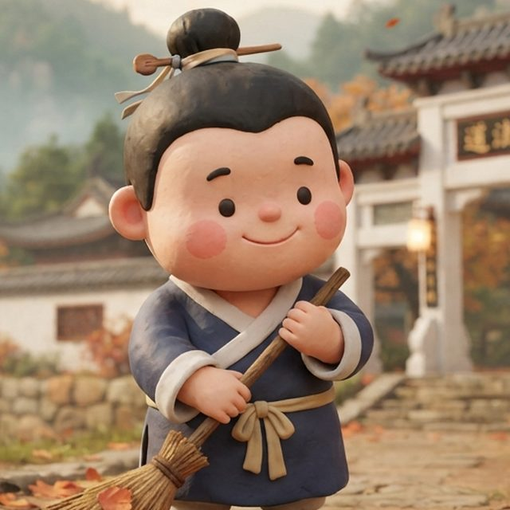

入嚟拜神，休息一陣
唔使註冊，唔使下載。嚟拜神，先喺庭院沿石徑慢慢行，去湖邊同松樹下靜一靜，然之後先入殿上炷香、鞠個躬。呢度冇聊天，冇喧嘩，只有雀聲、水聲、鐘聲。
你係邊個小道童？
本頁為 Demo 示範版，3D 場景與儀式均為體驗示範；殿內善信為氣氛人物，並非真人連線。真正多人同時在線版本需要後端支援，Demo 未包含。
誦經：台灣福嚴佛學院僧眾《心經》唱誦（Matheson Trust Sacred Audio Collection）
入殿之前，先喺湖邊同樹下慢慢行，靜一靜。

慢慢行，唔使急。湖邊同老樹下最靜，行到廟門就可以入殿。
拖動畫面環視庭院 · 撳地下石徑或草地，就可以慢慢行過去
撳入去，就可以入殿參拜。
入殿之後可以上香、合掌、鞠躬、求籤、撥念珠同敲鐘，靜心參拜。
求籤問卜 · 有求必應
拖動畫面環視大殿 · 撳一個發光嘅空蒲團，就可以坐低參拜
呢間殿仲喺籌備之中，工匠正在雕琢神壇。開放日期一到，會喺廟門公佈。感恩善信耐心等候。
心誠則靈。請喺心入面默念所問之事，再撳「搖籤」。
籤文錄自黃大仙靈籤通行本，請靜心細讀。
來源：嗇色園官方籤文（黃大仙祠一百靈籤），籤文、解曰及詳情逐支核對。一百支已齊。籤文屬民俗文化參考，並非命運判決；重要決定請以現實判斷為準。
一珠一念，心無雜念。撳下面按鈕逐粒撥，數滿 108 粒為一遍。
靜心，開始第一粒。
隨緣樂助，多少不拘。香油錢用作維持廟宇香火與日常修繕。
Demo 示範：呢度唔會真係扣錢，撳「添香油」只會送上多謝。